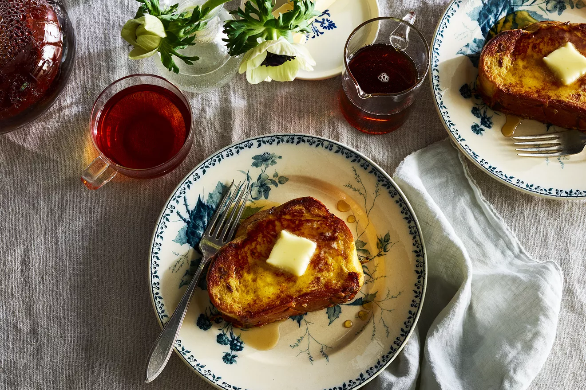

Bussin' French Toast

Description
Who doesn't love a good French Toast first thing in the morning?
Ingredients
- 1 loaf challah bread
- 3 large eggs
- 1/2 cup heavy cream
- 2 to 4 tablespoons unsalted butter
- maple syrup
Steps
- Slice the challah into ¾- to 1-inch-thick slices. In a small bowl, whisk the eggs and cream.
- Heat a griddle or flat grill pan over medium-high heat. Melt 1 tablespoon of butter for every
2 pieces of French toast, swirling the butter around to cover the surface.
- Dip a slice of the bread into the egg mixture; turn and repeat. Cook for about 90 seconds,
until golden on one side. Turn and continue to cook for about 1 minute, until the second side is golden.
- Serve with more butter and the maple syrup alongside.
Return to Homepage